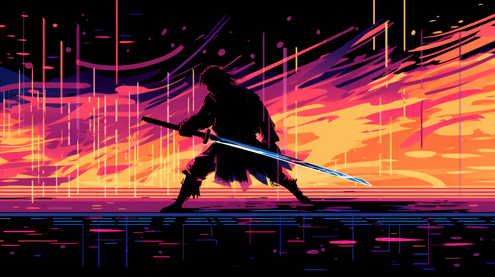
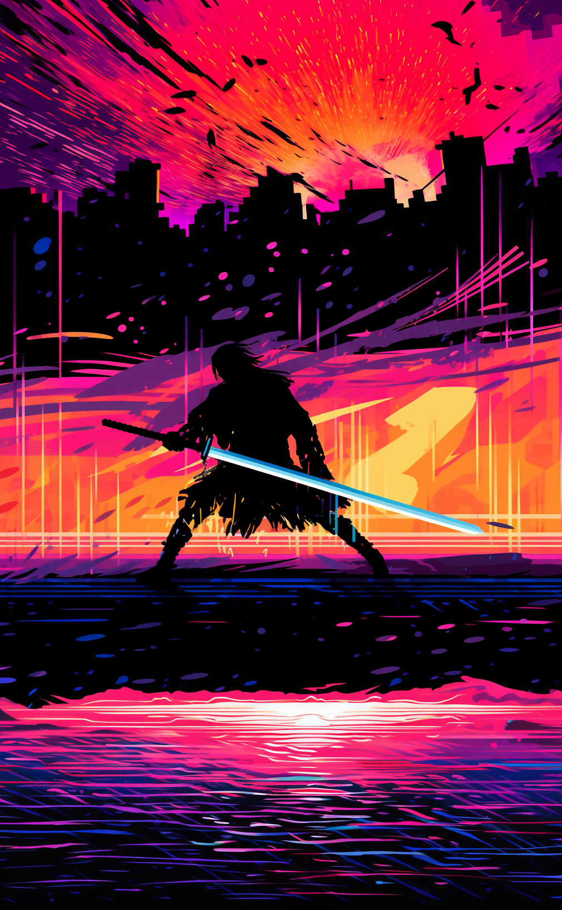

Edge of Divinity is an intense top-down 2D slasher where players must maintain their momentum to excel.
The game puts players in control of a character armed with a sword, with the core mechanic focusing on
precise sword swinging to damage enemies. The amount of damage inflicted by the sword is determined by
the velocity and momentum of the swing, creating a satisfying and skill-based gameplay experience.
During the whole process of creating this game, my focus has been on refining the core mechanic, that of
momentum-based swordplay. My goal was to make it look, feel and behave just how I wanted it, to make sure
that the foundation was incredibly solid. I am very pleased with what I have thus far been able to put together!
4 weeks
Developed Solo
Powered by Unreal Engine 5
Platforms: Windows (with plans for Android)

Check out the Project Breakdown to learn about my plan and thought process!
Your cursor dictates the direction your sword faces. Meaning: your sword points where you point.
The faster you swing, the more damage your slashes deal. Increasing your character's speed also increases this damage!
When a glowing white circle appears at your feet, you can activate a "Lunge". When you stand still, Lunging sends you flying forwards with a burst of speed. After a short while, you will start slowing down unless you hit a new target.
Successfully slashing a target creates a slowly closing white circle at your feet, indicating that you can perform a Lunge as long as the circle persists. Activating the Lunge gives you a speed boost and sends you flying toward the direction of your sword.
You also have the ability Pivot, which is a way to "fake" a hit (that means it activates your Lunge!).
You are able to slash several targets with a single swing. Whenever you hit a second target before the prior one's white Lunge circle disappears, your Combo counter increases. Lunging while you have an active Combo will end it - and grant you a significant speed boost increasing with the number of hits in the Combo.
Edge of Divinity is an intense top-down 2D game where players must maintain their momentum to excel. The game puts players in control of a character armed with a sword, with the core mechanic focusing on precise sword swinging to damage enemies. The amount of damage inflicted by the sword is determined by the velocity and momentum of the swing, creating a satisfying and skill-based gameplay experience.
First and foremost, I wanted to put my time into making the main mechanic behave and feel the way I wanted it to. I expected the biggest challenge in this would be making the momentum change feel impactful and satisfying to the player, which turned out to be correct. Once I was satisfied with the feel of core mechanics, I would look into adding more content where I felt it would improve the experience.
My core philosophy throughout the project has been trying to minimize the complexity of the game whilst maximizing the skill ceiling and skill expression. I want the gist of the gameplay to be easily understood within your first minute of playing, but I want your tenth hour of playing to still feel satisfying and captivating.
The main mechanic of the game is a somewhat novel mouse-based movement system which I have found to be quickly understood even by uninitiated players. It's simple enough to pick up on the fly and understand, and reliable enough to perform how the player expects it to. The nature of the game itself, putting a lot of emphasis on momentum, makes gameplay fast-paced and requires the player to act on split-second decisions to perform optimally.
The playtesters I've been lucky enough to have aiding me through this process have given me a lot of suggestions for additions to the game. "What if you could keep a combo up even after a dash by using the Pivot ability", "You should make slashing enemy bullets should also activate the lunge", "Couldn't the walls bounce you back when you dash into them?", etc. I have carefully considered these suggestions but ultimately only implemented a select few of them.
I considered things such as consistency: making sure that the game behaves how the player expects it to, encouraging playmaking: being careful to reward specifically non-stale play, which keeps the game exciting, and quality of life: trying to keep a smooth and satisfying experience for the player.
Returning to a previous example, let's say that slashing enemy projectiles gave the same effect as slashing an enemy (the ability to lunge). This change might be consistent with the notion that slashing things activates the lunge, but it would also be encouraging the player to keep projectile enemies alive, as doing so would result in greater manoeuvrability and speed, both of which are highly desirable.
I decided that I did not want keeping enemies alive to be the most effective way to play the game, and so I made the decision not to include this particular change.
Through the playtesting, a lot of players expressed that the game felt highly satisfying… until you missed a strike. Doing so left you barreling toward who-knows-where, unable to do anything to rectify the unfortunate situation. While the goal of the game is of course not to make the player feel unsatisfied, I was also struggling to find a good solution for this. If messing up had no consequence, good play would feel less rewarding as a result. This is where the suggestion of bouncy walls surrounding the arena presented a great quality of life improvement. Though this is not consistent with the other walls, giving these specific walls a different look let players know that there was something special about them. I didn't want to encourage the player to go for hail marys across the stage, so I made you lose 20% of your speed when you bounce.
Just as I had planned to do, I put the bulk of my effort into the main mechanic of the game: dashing and slashing. My biggest priority throughout the project was, and is, to make sure that this feels responsive and satisfying to the player. For this reason, I have also put some time into making VFX to support the look and feel of the bladework. Adding these VFX made the game look and feel more fluid and also helped with readability, making for a sizable improvement.
My reasoning behind this is simple. I feel that a solid core mechanic allows the game to remain uncomplicated and elegant in its design while still having intricacy and depth for the player to improve and grow in. It also gives me a very solid base to expand on the game from, should I wish to. I could make any number of gamemodes for this specific game later on.
In the end, I was not able to create a complete game in the timeframe. I am, however, very happy with the proof of concept I have made, and would say that the game is currently in a sort of "beta" state. Though it does not have all the polish I would have hoped, it is fully functional, and I am very happy with the state of the slash- and dash mechanic.
I decided to skip on creating things like an options menu, background music, art and such "fluff" as I like to call it. While the fluff is absolutely a relevant (and indeed quite important) factor for finished games, I was not willing to skimp on the core mechanics of the game to prioritize such aspects within these four weeks. I had plans to implement temporary sound effects, enemy models, environments for everything that would benefit from it, as well as plans to make a more appealing HUD and menus, but never found the time. Rather, I focused on the core of the game.
Throughout this project, I have made deliberate design choices to ensure that the core mechanics shine, even at the expense of adding "fluff" elements such as background music or extensive visual assets. While these aspects were not prioritized within the project's scope, they remain opportunities for future development and polish.
Looking ahead, I see immense potential for expanding 'Edge of Divinity' into a more complete and fully realized game. The foundation I have established provides a solid base for adding additional content, such as new game modes, enemy types, and environments, that could further enhance the gameplay experience.
'Edge of Divinity' stands as a proof of concept, a testament to the joy of precise swordplay, and a stepping stone towards the realization of a fully-fledged game that captures the essence of becoming a godlike force of tranquil destruction.
Splash art by Midjourney AI image generator.
Jade Sword by Ole Gunnar Isager on Sketchfab (concept from Nico Navarro).
Free sound effects from Pixabay and Mixkit.
(I plan to replace these assets in the future.)
Previous game projects: copying and referencing my old code.
All the rest was made by me using my own brain power!